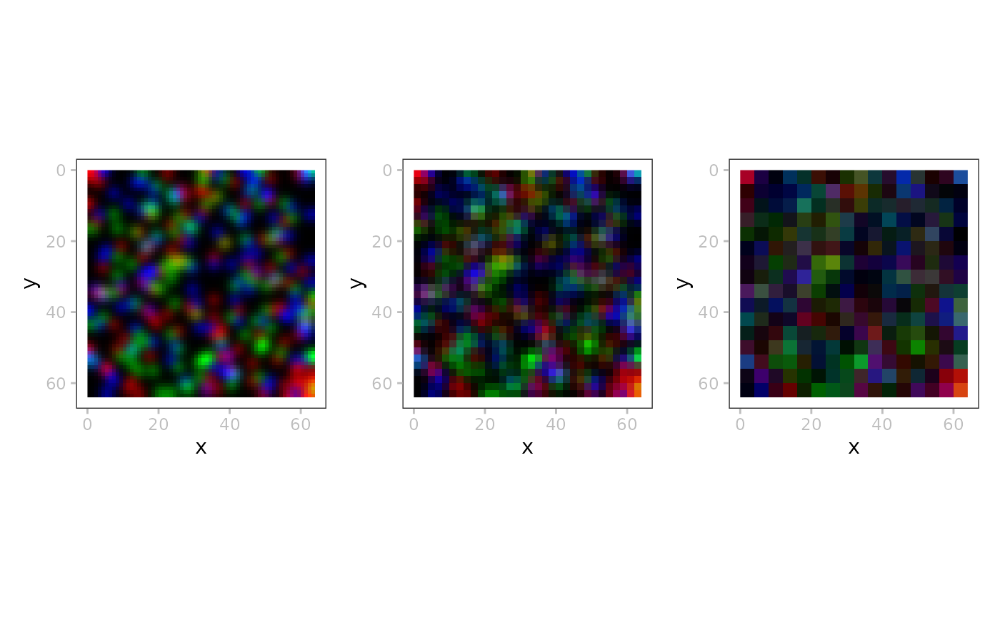
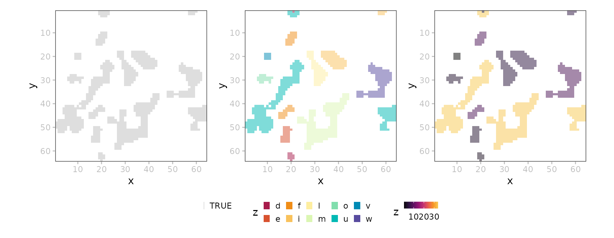
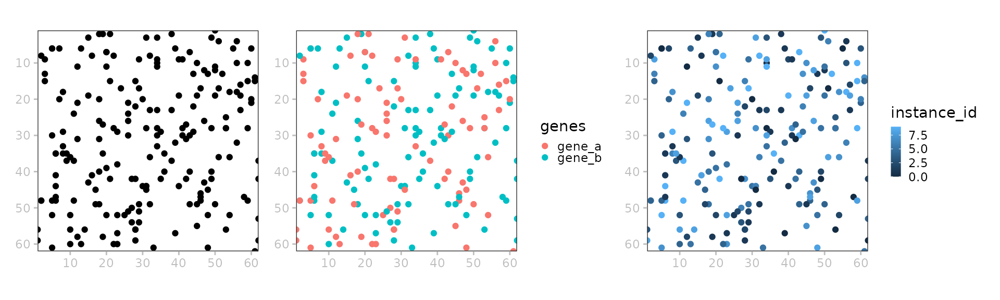
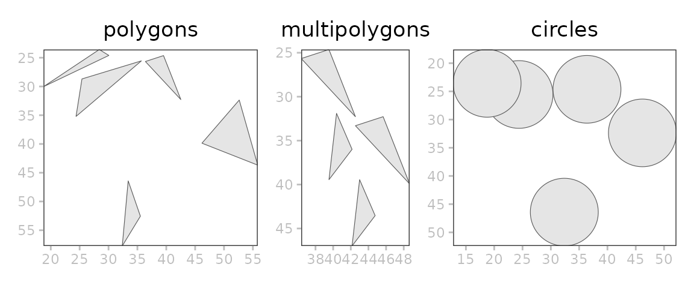
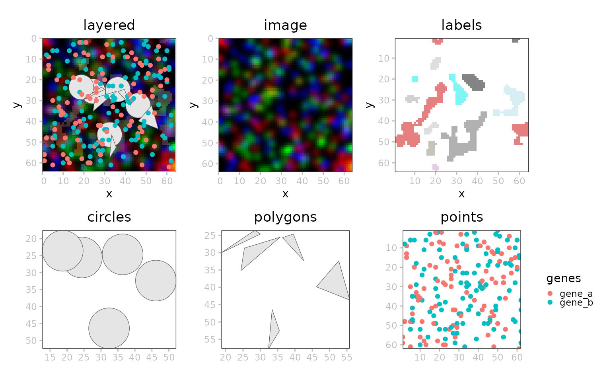
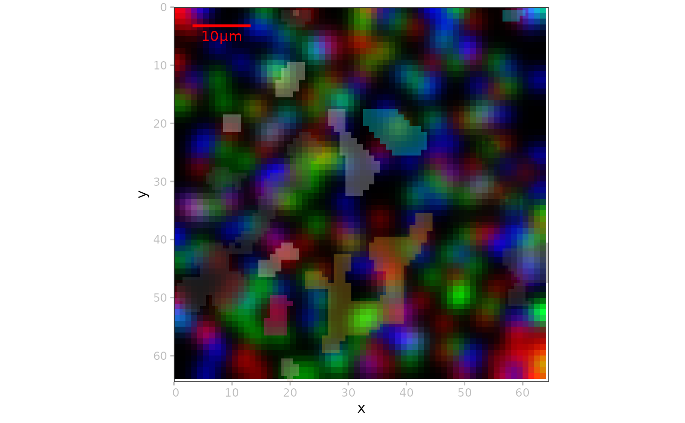

Abstract
SpatialData.plot provides a visualization suit for
SpatialData objects in ggplot2-style,
with support for multi-scale images and
labels, points and shapes,
and layering of elements into composite plots. For the latter,
POINT, POLYGON, and MULTIPOLYGON geometries are supported. For all
but images, there is support to pass information from
annotation tables as aesthetics (e.g.,
colData or assay data). For
images, auto-contrasting and multi-channel color
merging are supported. Each layer returns a standard
ggplot object, allowing for customization (e.g.,
using ggnewscale for layer-specific fill/color
scales), or multi-panel arrangement (e.g., using
patchwork).
Installation
SpatialData.plot can be installed as follows:
if (require("BiocManager", quietly=TRUE))
install.packages("BiocManager")
BiocManager::install("SpatialData.plot")For the purpose of this vignette, we require the following dependencies:
Introduction
The SpatialData.plot package contains a set of plotting
functions for spatial omics data stored as SpatialData
.zarr files that follow OME-NGFF
specs. Each SpatialData object is composed of five
layers: images, labels, shapes, points, and tables. Each layer may
contain an arbitrary number of elements. Images and labels are
represented as ZarrArrays (Rarr).
Points and shapes are represented as arrow objects
linked to an on-disk .parquet file. As such, all data are
represented out of memory. Element annotation as well as cross-layer
summarizations (e.g., count matrices) are represented as SingleCellExperiment
as tables.
We here demonstrate package functionality using a trivial example dataset. For more realistic technology-focused examples, we refer readers to the companion demo website.
x <- file.path("extdata", "blobs.zarr")
x <- system.file(x, package="SpatialData.plot")
(x <- readSpatialData(x))## class: SpatialData
## - images(2):
## - blobs_image (3,64,64)
## - blobs_multiscale_image (3,64,64)
## - labels(2):
## - blobs_labels (64,64)
## - blobs_multiscale_labels (64,64)
## - points(1):
## - blobs_points (200)
## - shapes(3):
## - blobs_circles (5,circle)
## - blobs_multipolygons (2,polygon)
## - blobs_polygons (5,polygon)
## - tables(1):
## - table (3,10) [blobs_labels]
## coordinate systems(5):
## - global(8): blobs_image blobs_multiscale_image ... blobs_polygons
## blobs_points
## - scale(1): blobs_labels
## - translation(1): blobs_labels
## - affine(1): blobs_labels
## - sequence(1): blobs_labelsVisualization
SpatialData.plot provides 5 user-facing plotting
functions:
-
plotSpatialData()renders a base (blank)ggplotwith simple aesthetics and, importantly, a fixed axial ratio as to not distort spatial coordinates. -
plotImage/Label/Point/Shape()render specificSpatialDataelements; each requires specification of the element index/namei, and coordinate systemj(by default, the first available element/system will be rendered); different functions further accept different arguments to control aesthetics.
Images
Image/LabelArrays are linked to potentially multiscale
.zarr stores. Their show method includes the scales available for a
given element:
image(x, "blobs_image")## class: SpatialDataImage
## Scales (1): (3,64,64)
image(x, "blobs_multiscale_image")## class: SpatialDataImage (MultiScale)
## Scales (3): (3,64,64 3,32,32 3,16,16)Internally, multiscale ImageArrays are stored as a list
of ZarrArray, e.g.:
## [,1] [,2] [,3]
## [1,] 3 3 3
## [2,] 64 32 16
## [3,] 64 32 16To retrieve a specific scale’s ZarrArray, we can use
data(., k), where k specifies the target
scale. This also works for plotting:
wrap_plots(nrow=1, lapply(seq(3), \(.)
plotSpatialData(x) + plotImage(i=2, k=.)))
Labels
Like images, labels are represented as
ZarrArray. Array values, however, are integers that
correspond to different instances, typically linked to a
table of annotations (e.g., expression values, observation
metadata, etc.).
i <- "blobs_labels"
t <- getTable(x, i)
t$id <- sample(letters, ncol(t))
table(x) <- t
p <- plotSpatialData(x)
pal_d <- hcl.colors(10, "Spectral")
pal_c <- hcl.colors(9, "Inferno")[-9]
a <- p + plotLabel(i, pal="grey") # binary
b <- p + plotLabel(i, c="id", pal=pal_d) # metadata
c <- p + plotLabel(i, c="channel_1_sum", pal=pal_c) # assay
(a | b | c) +
plot_layout(guides="collect") &
theme(legend.position="bottom")
Points
Elements of the points layer are rendered using
geom_point(), and accepts both discrete and continuous
color specifications.
i <- "blobs_points"
a <- p + plotPoint(i=i)
b <- p + plotPoint(i=i, col="genes") # discrete
c <- p + plotPoint(i=i, col="instance_id") # continuous
(a | b | c) 
Shapes
For demonstration, we render each shape element present
in the object, which includes all possible types: circles and
(multi)polygons.
p <- plotSpatialData(x)
a <- p +
labs(title="polygons") +
plotShape(i="blobs_polygons")
b <- p +
labs(title="multipolygons") +
plotShape(i="blobs_multipolygons")
c <- p +
labs(title="circles") +
plotShape(i="blobs_circles")
(a | b | c)
Layering
Several SpatialData elements (images, labels, points,
shapes) can be layered on-top of each other in ggplot-style
using the +-operator. The return value of each such call
remains a ggplot object, which accepts additional
aesthetics. Note that specifying layer-specific fill/color requires
setting up a new scale with
ggnewscale::new_scale_fill/color(); an example is as
follows:
p <- plotSpatialData(x)
# joint
all <- p +
plotImage() +
plotLabel(a=1/3) +
plotShape(i=1) +
plotShape(i=3) +
new_scale_color() +
plotPoint(col="genes") +
labs(title="layered")
# split
one <- list(
p + plotImage() + labs(title="image"),
p + plotLabel() + labs(title="labels"),
p + plotShape(i=1) + labs(title="circles"),
p + plotShape(i=3) + labs(title="polygons"),
p + plotPoint(col="genes") + labs(title="points"))
wrap_plots(c(list(all), one), nrow=2)
Scalebars
A scalebar of a specified length (in the annotated unit) can be added
using the scalebar() function.
plotSpatialData(x) +
plotImage() +
plotLabel(a=1/3) +
scalebar(len=10, xrel=0.05, yrel=0.95)
Session info
## R Under development (unstable) (2026-10-06 r90643)
## Platform: x86_64-pc-linux-gnu
## Running under: Ubuntu 24.04.5 LTS
##
## Matrix products: default
## BLAS: /usr/lib/x86_64-linux-gnu/openblas-pthread/libblas.so.3
## LAPACK: /usr/lib/x86_64-linux-gnu/openblas-pthread/libopenblasp-r0.3.26.so; LAPACK version 3.12.0
##
## locale:
## [1] LC_CTYPE=C.UTF-8 LC_NUMERIC=C LC_TIME=C.UTF-8
## [4] LC_COLLATE=C.UTF-8 LC_MONETARY=C.UTF-8 LC_MESSAGES=C.UTF-8
## [7] LC_PAPER=C.UTF-8 LC_NAME=C LC_ADDRESS=C
## [10] LC_TELEPHONE=C LC_MEASUREMENT=C.UTF-8 LC_IDENTIFICATION=C
##
## time zone: UTC
## tzcode source: system (glibc)
##
## attached base packages:
## [1] stats graphics grDevices utils datasets methods base
##
## other attached packages:
## [1] SpatialData.plot_0.99.8 spatialdataR_0.99.44 ggnewscale_0.5.2
## [4] patchwork_1.3.2 ggplot2_4.0.3 BiocStyle_2.41.0
##
## loaded via a namespace (and not attached):
## [1] tidyselect_1.2.1 grumpy_0.1.1
## [3] blob_1.3.0 dplyr_1.2.1
## [5] farver_2.1.2 R.utils_2.13.0
## [7] S7_0.2.2 fastmap_1.2.0
## [9] SingleCellExperiment_1.35.2 duckdb_1.5.6
## [11] digest_0.6.39 lifecycle_1.0.5
## [13] sf_1.1-3 paws.storage_0.11.0
## [15] magrittr_2.0.5 compiler_4.7.0
## [17] rlang_1.3.0 sass_0.4.10
## [19] tools_4.7.0 yaml_2.3.12
## [21] knitr_1.52 labeling_0.4.3
## [23] S4Arrays_1.13.2 classInt_0.4-11
## [25] curl_8.0.0 reticulate_1.47.0
## [27] DelayedArray_0.39.8 RColorBrewer_1.1-3
## [29] abind_1.4-8 KernSmooth_2.23-27
## [31] withr_3.0.3 purrr_1.2.2
## [33] BiocGenerics_0.59.12 desc_1.4.3
## [35] R.oo_1.27.1 grid_4.7.0
## [37] stats4_4.7.0 e1071_1.7-17
## [39] scales_1.4.0 SummarizedExperiment_1.43.0
## [41] cli_3.6.6 rmarkdown_2.32
## [43] crayon_1.5.3 ragg_1.5.2
## [45] generics_0.1.4 otel_0.2.0
## [47] DBI_1.3.0 cachem_1.1.0
## [49] proxy_0.4-29 BiocManager_1.30.27
## [51] XVector_0.53.0 matrixStats_1.5.0
## [53] vctrs_0.7.3 Matrix_1.7-6
## [55] jsonlite_2.0.0 bookdown_0.48
## [57] IRanges_2.47.5 S4Vectors_0.51.10
## [59] RBGL_1.89.0 systemfonts_1.3.2
## [61] jquerylib_0.1.4 units_1.0-1
## [63] glue_1.8.1 pkgdown_2.2.1
## [65] ZarrArray_1.1.7 gtable_0.3.6
## [67] Rarr_2.1.45 GenomicRanges_1.65.4
## [69] tibble_3.3.1 pillar_1.11.1
## [71] htmltools_0.5.9 Seqinfo_1.3.2
## [73] graph_1.91.0 dbplyr_2.6.0
## [75] R6_2.6.1 httr2_1.3.0
## [77] wk_0.9.5 textshaping_1.0.5
## [79] evaluate_1.0.5 lattice_0.23-1
## [81] Biobase_2.73.2 R.methodsS3_1.8.2
## [83] png_0.1-9 duckspatial_1.2.1
## [85] paws.common_0.9.0 bslib_0.12.0
## [87] class_7.3-24 uuid_1.2-2
## [89] Rcpp_1.1.2 SparseArray_1.13.4
## [91] anndataR_1.3.2 xfun_0.61
## [93] fs_2.1.0 MatrixGenerics_1.25.0
## [95] pkgconfig_2.0.3